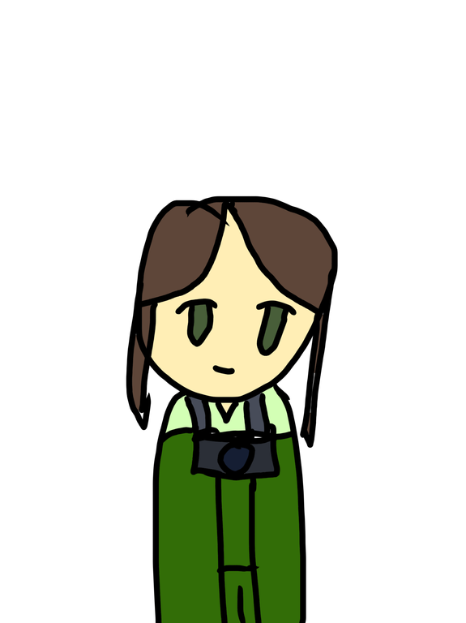
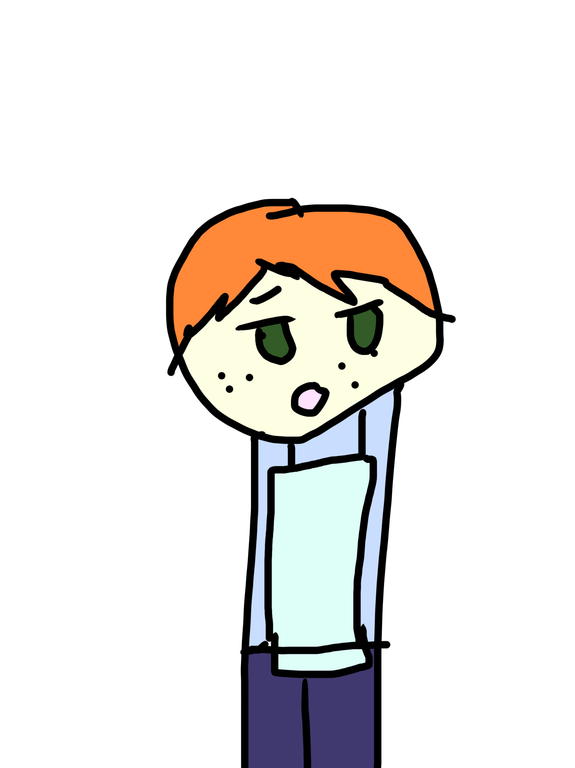

Mr. Strawberry, a prized cat, has gone missing from the Cat Cabby Showcase. He was a strange-looking cat who looked just like a strawberry, making him extremely rare and worth a lot of money. There were many people visiting the Cat Cabby Studio that day, so no one knows who could have taken him. After his disappearance was discovered, the doors were sealed to prevent anyone from leaving. Everyone who was inside the building when Mr. Strawberry disappeared is still there. Now it is up to you to find out who stole him.


Mr. Strawberry was last seen inside his display room shortly before the showcase began. Lily had finished feeding him, and Emma had taken several photographs of him. The staff later discovered that his display was empty, but the door showed no signs of being forced open.
The studio's security cameras showed Oliver speaking with the owner near the entrance. Emma was seen entering the photography room, while Lily was helping another staff member prepare the other cats. Felix was recorded pushing a large supply cart out of the display room shortly before Mr. Strawberry disappeared.
During the investigation, the staff discovered a small amount of strawberry-colored fur inside an empty supply box. The box had several air holes and was found on the same cart Felix had been using. According to the studio records, Felix was the only person assigned to move that cart during the showcase.
Review the suspects' statements and evidence before choosing your answer.
Select the person you believe stole Mr. Strawberry in the Investigation section.
Solve CaseThat is not the correct suspect. Try again!